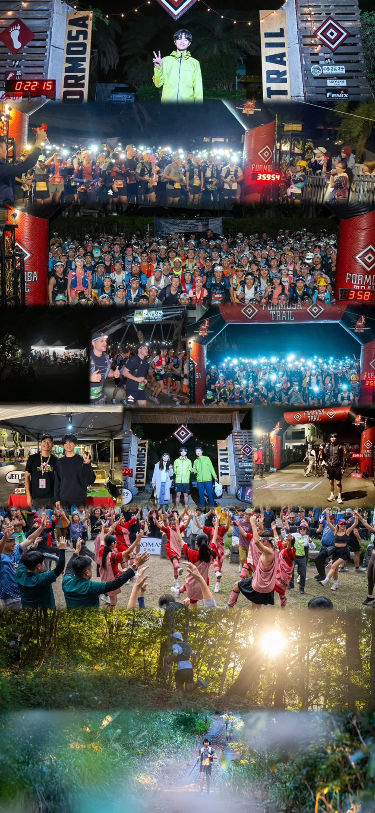

SECTION 04 · AWAY FROM THE DESK第 04 節 · 離開桌前
FIELD現場
Two trips that changed what I work on, written out in full rather than summarised into a line on a CV.兩趟改變了我研究方向的旅程，完整寫出來，而不是壓縮成履歷上的一行。
L5a
The two of them這兩趟


L5b
Contact sheet印樣
 PHL · AAAI-25 WORKSHOP · 2025-03-01
PHL · AAAI-25 WORKSHOP · 2025-03-01 PHL · 2ND OF 600+ TEAMS · 2025-03
PHL · 2ND OF 600+ TEAMS · 2025-03 NTHU · DRY LAB · 2023
NTHU · DRY LAB · 2023 CDG · GRAND JAMBOREE · 2023-11
CDG · GRAND JAMBOREE · 2023-11 CDG · 2023-11-11 · GOLD
CDG · 2023-11-11 · GOLD
FORMOSA TRAIL · TAIWAN06 REMAINING FRAMES · CLICK TO ENLARGE · ← → TO STEP其餘 06 張 · 點擊放大 · ← → 切換